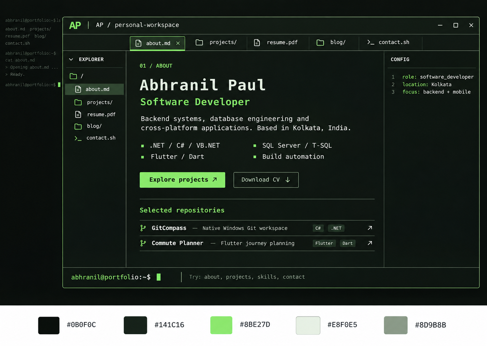
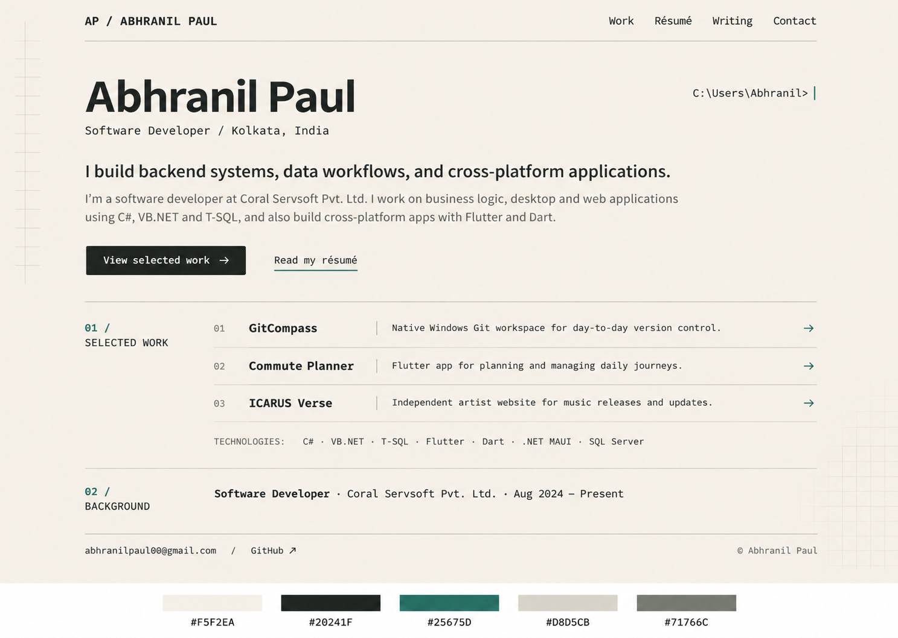
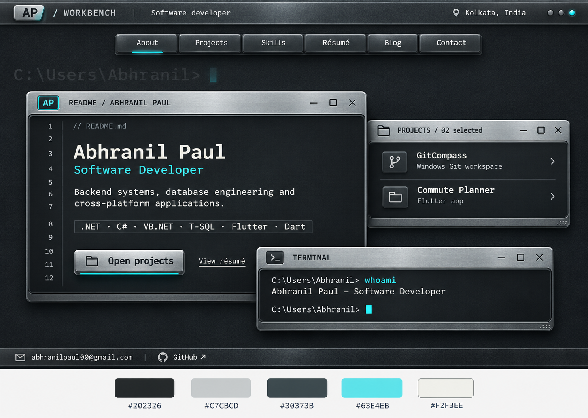

01 / Command-line curiosity
Terminal Workspace
File tabs, a live command prompt, phosphor green and a blinking cursor. Explore with clicks or commands.
#0B0F0C#141C16#8BE27D#E8F0E5#8D9B8BTHREE WORLDS / ONE DEVELOPER
Three different ways to explore my work. Pick a world and step inside.

01 / Command-line curiosity
File tabs, a live command prompt, phosphor green and a blinking cursor. Explore with clicks or commands.
#0B0F0C#141C16#8BE27D#E8F0E5#8D9B8B
02 / A minimalist professional dossier
Warm paper, precise typography and a clear, readable view of the person behind the software.
#F5F2EA#20241F#25675D#D8D5CB#71766C
03 / A tactile developer desktop
Brushed-metal windows, physical controls, cyan accents and a command terminal. Minimize and restore the windows.
#202326#C7CBCD#30373B#63E4EB#F2F3EE